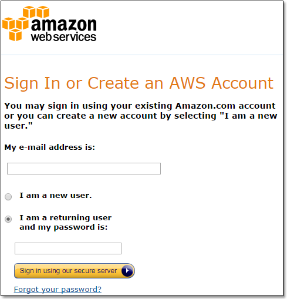
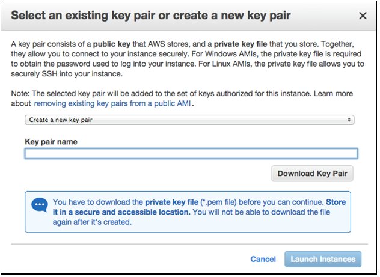

Brief Guide On Running RStudio Server On Amazon Web Services
Practical walkthroughs on machine learning, data exploration and finding insight.
Resources
There are a lot of great resources on the web, but I didn’t find one that covered my needs from end to end, and figured others could benefit from a walkthrough. Here, I’ll show how to select, install and run RStudio Server, customize security settings to use the RStudio’s web interface, and upload and download data between your local machine and the server.
If you like Kaggle competitions, like I do, then this is a great way of quickly adding all sorts of computing configurations to satiate your needs. Our first stop is at Louis Aslet’s web page. Louis curates a series of Amazon Machine Images (referred as AMIs):

These are pre-configured images that will install RStudio and common R packages onto a computing instance. This is a huge time and money saver as it automatically installs a whole slew of software under two minutes - and when you’re charged by the minute, every minute counts.
Louis also has a video, albeit short, on how to setup RStudio and lots of additional resources. So explore them if you have unanswered questions. We’re interested in the upper right-hand box where you need to select the AMI closest to your location and click on it. This will take you to the Amazon Web Services page. If you do not have an AWS account, it will prompt you to set one up:

Otherwise it will take you to Step 2. This is the fun part. Its like going to the store and picking up a brand new computer. Here you get to choose how much computing muscle you want. The AMI image you selected earlier will get applied to whatever setup you choose. You can go for more GPU, memory, storage, etc. Unfortunately, throwing more memory at a problem is not a guarantee to make it go away - and I’m talking from personal experience here.

I recommend starting small as it is easy to upgrade an existing instance to something bigger.
Security
You need to have two open ports and a key-pair to communicate with your instance.
Port 22 should be opened by default and you’ll need to add port 80.
Port 22 is used to connect a command line terminal tool using SSH. I will not be showing that today. Instead, we’ll be using port 80 which allows access to the web interface of RStudio. So add another rule, choose HTTP, enter the value 80, and leave the rest as is:

After you hit Launch, a key-pair pop-up box will appear. This is what authenticates your computer’s identity and allows you to communicate securely to your AWS instance. If this is your first time using EC2 you’ll want to create and download a new key pair:

View Instance
After launching your instance, once the instance state goes from initializing to running, the public DNS string is the official link to your instance’s RStudio web interface:

Once your instance is running (green light), click on it, copy the Public DNS URL and paste it in your browser:

Using RStudio Server
You will be prompted for your credentials. By default, the initial account and password for these AMIs is rstudio, rstudio, all lower case:

Once in RStudio, the first thing you need to do is run the loaded script and change the password (minimum length required is 8 characters). Replace the mypassword with your new password and hit the run script button. Then log out and back in with the new password:

Uploading and Downloading Files
The last thing I want to cover is how to upload and download files to and from your EC2 instance.
Uploading Files (i.e. copying files from your local machine to your EC2 Instance):
- Switch to the Files pane
- Navigate to the directory you wish to upload files into
- Click the Upload toolbar button. A menu box will open and select the file you want to upload
- Choose the file you wish to upload and press OK
Note: you can upload several files or even an entire folder at once, you just need to compress everything into a zip file and upload it (when RStudio receives an uploaded zip file it will automatically uncompresses it).

Downloading Files (i.e. copying files from your EC2 instance to your local machine):
- Switch to the directory you want to download files from the Files pane
- Select the file(s) and/or folder(s) you want to download
- Click More and Export on the toolbar
- You'll then be prompted with a default file name for the download. Either accept the default or specify a custom name then press OK

Important
Don’t forget to shut down the server or terminate it completely - otherwise the meter will keep running and you will keep being charged!
Additional Resources (PDFs)